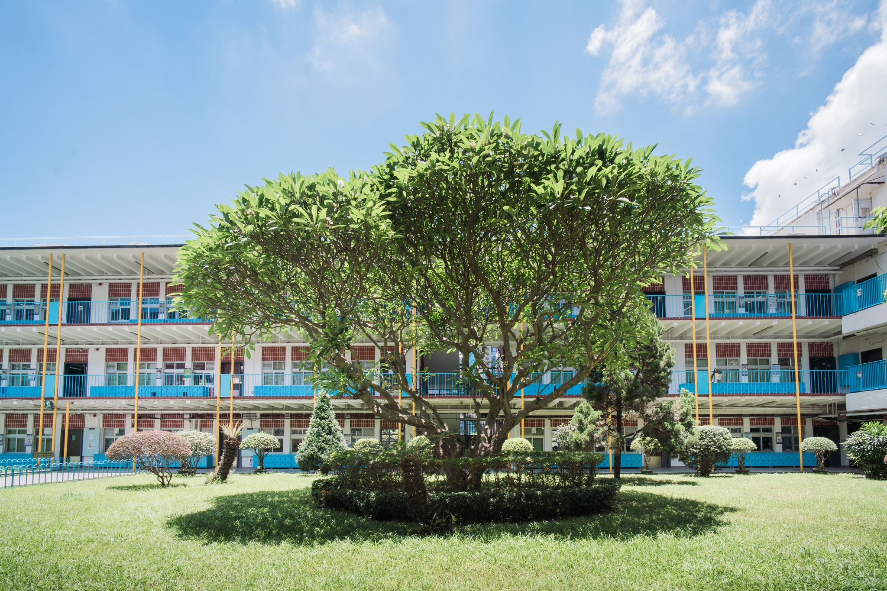

Harmonizing urban education with local wildlife conservation since 2025.

We are a passionate team from WYHK, committed to enhancing the natural environment for squirrels in and around our school. Our mission is to create a welcoming habitat that encourages biodiversity to thrive.
Situated at 281 Queen's Road East, Wan Chai, WYHK is nestled on Mount Parish. It provides the second-largest green campus on Hong Kong Island.
Get Directions